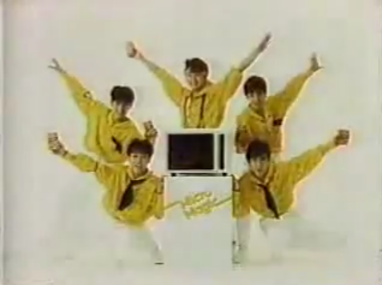

☆ Ｆｌａｓｈのページ ☆

さあ皆さん！今日はね、このFlash動画！ご紹介します。
懐かしいですね～、学生の頃ワタシもよく見てましたよ２ちゃんねるのFlash！
今日ご紹介させて頂くのは、そんなレトロテイストなモナーのFlashなんですが
何が凄いってコレ、なんと2019年製なんです！
令和元年に作られた最新のアスキーアートのFlash動画なんですよ！
どうです？面白そうでしょう？凄いでしょう！？
童貞作
mona.swf
引き出しの奥から出てきたFlashMX（2004年発売）をインストールして
当時モノのソフトで作られた、トラディショナルでオーセンティックなリアル・アスキーアート・フラッシュムービーです。